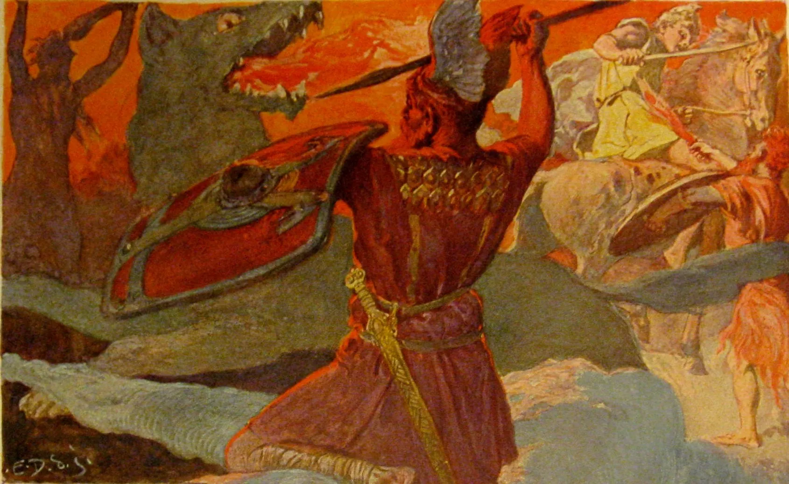
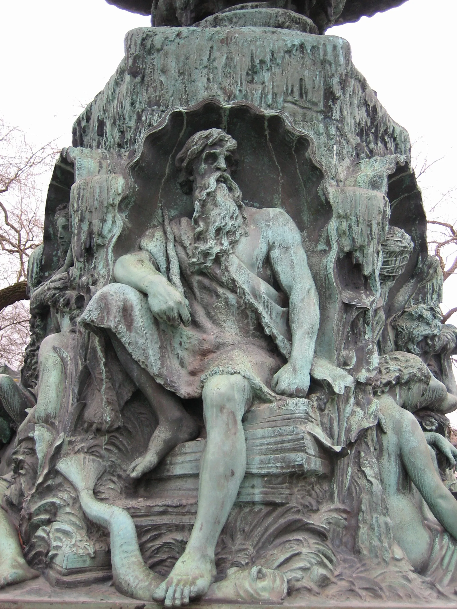
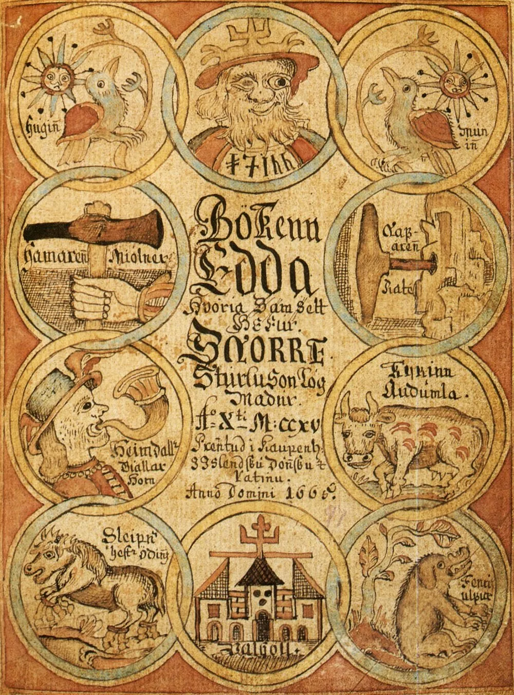
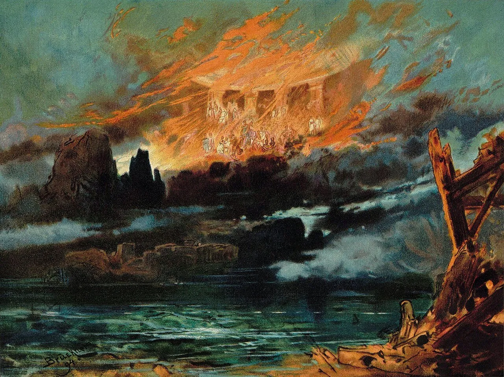
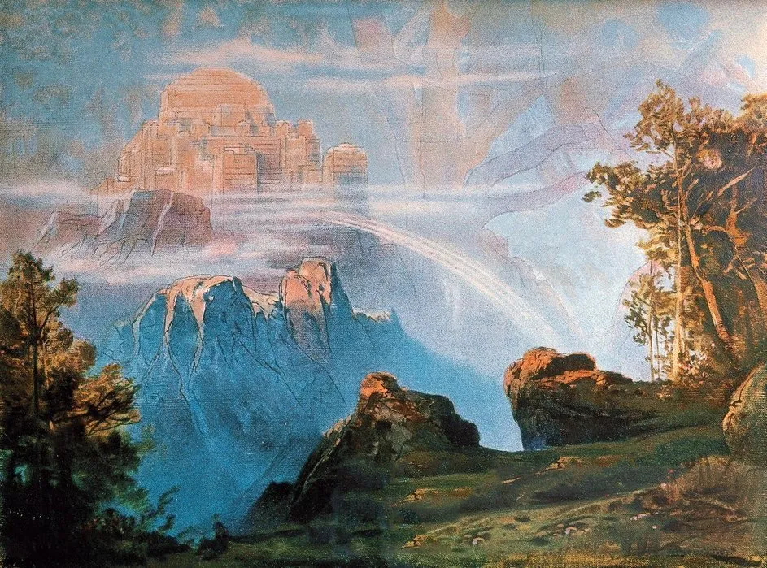
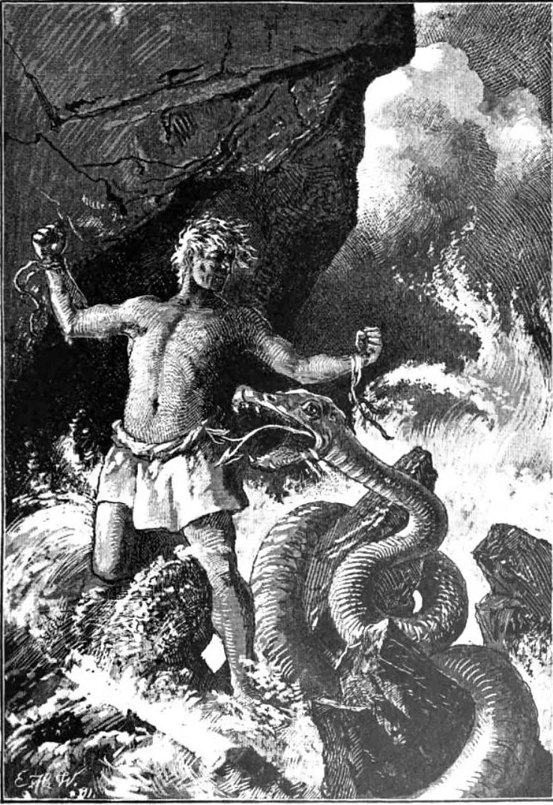
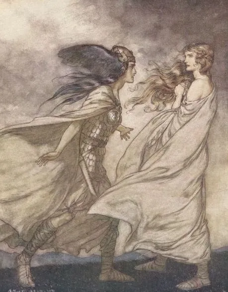

라그나로크냐, 라그나뢰크냐?

북유럽 신화에 전혀 관심이 없더라도 라그나로크Ragnarök는 한 번쯤 들어보셨을 겁니다. 간단히 설명하자면, 라그나로크는 북유럽 신화가 제시하는 말세와 종말입니다. 최후의 대전쟁이 벌어지고, 세상이 싸그리 불타고 리셋되지요.
그런데 어떤 분들은 “라그나로크”라고 말하고, 다른 분들은 “라그나뢰크”라고 말합니다. 무엇이 옳은 걸까요?
에다 시대 최후의 시인
여기에는 800년 전부터 이어진 혼란의 역사가 있습니다. 그 시작은 1179년 아이슬란드의 시골에서 태어난 스튀르들라Sturla의 아들 스노리Snorri라는 시인으로 거슬러 올라갑니다.
스노리 이전부터 아이슬란드에는 기독교 이전 신화와 영웅 전설을 다루는 시학 장르가 있었고, 이걸 «에다Edda»라고 불렀습니다.
그러나 스노리 시대에 아이슬란드는 이미 기독교화한 지 오래였습니다. 전국에 교회 네트워크가 쫙 깔린 지 이미 200년 가까이 된 때였죠. 옛 신화 지식은 당연히 점차 잊혀 갔습니다. 스노리는 바로 여기서 위기의식을 느꼈습니다.

기독교 사회에서 이교 신화 좀 잊어먹는 게 뭐가 대수냐?
스노리의 직업은 시인이었고, 아이슬란드 시인은 옛 시인들이 수백 년 동안 쌓아 놓은 명작을 레퍼런스로 삼았습니다. 그리고 그 옛 시인들이 지은 문학은 당연히 옛 종교 지식을 기반으로 성립했습니다.
황금을 왜 “수달의 목숨에 배상한 값”이라고 부르는가?
대지를 왜 “까마귀 신의 기쁨의 질투”라고 부르는가?
태양을 왜 “동서남북 난쟁이의 노역”이라고 부르는가?
현란한 시어를 해독하고 뜻을 알아내려면 옛날 신화 지식이 필수였습니다. 그리고 그 레퍼런스가 잊혀 갔기에, 당대 아이슬란드에서 가장 유명한 시인이었던 스노리가 위기 의식을 느낀 것이죠.

스노리는 잊힌 신화 지식을 쉽게 풀어 쓰는 긴 글을 썼으니, 이것 또한 «에다»라고 불립니다.
라그나로크 문제는 바로 여기서 시작됩니다.
스노리 에다, 혼란의 씨앗
옛날 «에다»는 신들과 세상의 종말을 가리켜 ragnarǫk라고 기록하였습니다1.
ragna는 “권세” 즉 “신들”을 가리키는 중성 복수 명사 regin의 속격(소유격) 형태이고, rǫk는 “마지막으로 닥치는 운명”을 뜻합니다.
즉 ragnarǫk는 “신들에게 마지막으로 닥치는 운명”이라는 뜻입니다.
학자들의 재구에 따르면, «에다» 시대의 ǫ는 /ɔ/로 읽습니다. 영어 단어 thought, brawl 등의 모음과 비슷하죠.
ragnarǫk /rɑɣnɑrɔk/ 는 아마 “라그나로크”로 표기할 수 있을 것입니다.
그리고 혼란상은 여기서부터 시작됩니다.
«에다»의 신화적 지식을 해설한 스노리는 당연히 라그나로크도 해설했습니다. 그런데 그의 «에다»에서는 이 단어를 ragnarøkkr로 표기합니다.
røkkr는 /røkːr/ 곧 “뢰크르”로 발음하며, “황혼”을 뜻합니다. 그러니 ragnarøkkr 곧 “라그나뢰크르”는 “신들의 황혼”이죠.

많은 독자님께 “신들의 마지막 운명”보다 “신들의 황혼” 쪽이 더 익숙하실텐데, 리하르트 바그너의 오페라 «신들의 황혼Götterdämmerung»이 한몫 했을 겁니다.
어쨌든, ragnarǫk라고 잘 알려져 있던 이 단어는 스노리의 손에서 ragnarøkkr라는 새 표기를 얻었습니다.
세월의 풍파
적어도 이때는 아이슬란드인들이 rǫk와 røkkr를 헷갈릴 이유는 없었습니다. 그러나 언어는 변하게 마련이고, 노르드어(옛 아이슬란드어)도 예외는 아니었죠.
세월이 흐르며 ǫ와 ø의 발음이 합쳐져 ø 쪽으로 통합되었습니다2. 아이슬란드 사람들은 이렇게 합쳐진 음소를 ö라고 표기하기 시작했습니다. ragnarǫk는 ragnarök(라그나뢰크), ragnarøkkr는 ragnarökkr(라그나뢰크르)가 되었죠.
유럽 대륙의 강대국이 개입하기 시작하면서 혼란은 걷잡을 수 없이 가중됩니다.
1755년 스노리 «에다»가 프랑스어로 번역되며 대륙에 본격적으로 «에다»가 알려집니다. 19세기에 전 유럽을 휩쓴 민족주의의 열풍에 힘입어 «에다»는 “진정한 게르만의 혼”으로 널리 읽혔습니다.

이제 대륙의 아이슬란드어 표기 관행 문제가 추가됩니다.
대륙 사람들은 아이슬란드어 명사의 어미, 특히 “-r”을 떼어 적고는 하였습니다. 그렇기에 Ásgarðr는 Asgard, Jötunnheimr는 Jotunheim이 되었죠.
아마 독자님도 아스가르드르, 요툰헤이므르보다 아스가르드, 요툰헤임이 익숙하실 거예요.
ragnarökkr에 관하여 말하자면, 본토 아이슬란드에서는 이미 -r 앞에 삽입 모음이 붙어서 ragnarökkur, 즉 “라그나뢰퀴르”가 된 지 오래였습니다.
그러나 유럽 대륙에서는 앞서 설명한 관행이 지배적이었고, 이 단어는 어미를 뗀 ragnarök로 알려져 버렸습니다.
이 과정을 거쳐서…
신들의 마지막 운명: ragnarǫk → ragnarök
신들의 황혼: ragnarøkkr → ragnarökk(u)r → ragnarök
두 개의 다른 단어가 우연히 같아져 버렸습니다. 아이슬란드인이야 당연히 다른 단어라는 걸 알지만(rök vs rökkur), 유럽인 독자들은 그냥 “같은 명사의 이표기겠거니” 하고 넘어갔습니다.

여기서 앞서 언급한 바그너의 오페라 «신들의 황혼»이 대히트를 칩니다. 독일어 원제 Götterdämmerung은 스노리식 ragnarøkkr의 계보를 따릅니다. 만약 바그너가 ragnarǫk를 따랐다면, 제목이 “황혼”이 아니었겠죠.
많은 사람들이 “황혼”이 맞구나! 하고 당연히 생각하게 됩니다. 우리도 “신들의 마지막 운명”보다는 “신들의 황혼”이 더 익숙하죠.
이 계보의 기원은 rök가 아니라 røkkr이고, 심지어 røkkr는 다시 rök로 왜곡되었습니다.
그리고 ö는 독일어로 “ㅚ”로 읽습니다. “라그나뢰크”의 탄생입니다.
결론
본래 옛 «에다»에서 전하던 고대 노르드어:
ragnarǫk (라그나로크) = 신들의 마지막 운명
스노리 «에다»가 기술한 고대 노르드어:
ragnarøkkr (라그나뢰크르) = 신들의 황혼
근대 유럽의 수용사를 통하여 두 단어가 수렴한 형태:
ragnarök (라그나뢰크) = 신들의 황혼

«에다»를 완역한 제 생각을 마지막으로 곁들입니다.
“ragnarök”를 “신들의 마지막 운명”이라는 뜻의 현대 아이슬란드어 단어로 받아들인다면 “라그나뢰크” 독법은 지지됩니다.
하지만 현대 아이슬란드어를 선택했으니, Ægir도 “아이르”, Ásgarðr도 “아우스가르뒤르”여야겠네요.
만약 “ragnarök”를 “라그나뢰크”라고 읽으면서 Ásgarðr를 “아스가르드”라고 읽는다면, 이것은 근대 유럽 (특히 독일) 수용을 거친 것입니다.
고대 노르드어 원문을 중시한다면 ragnarǫk를 따라 “라그나로크” 또는 ragnarøkkr를 따라 “라그나뢰크르” 라고 음역하는 것이 가장 좋다고 생각합니다.